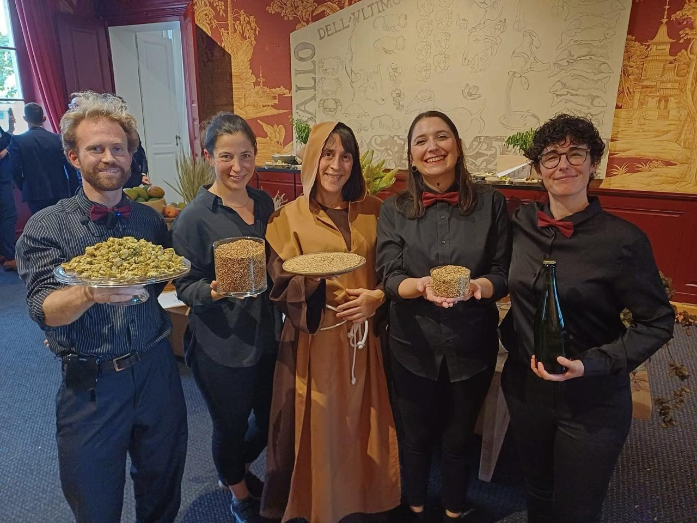
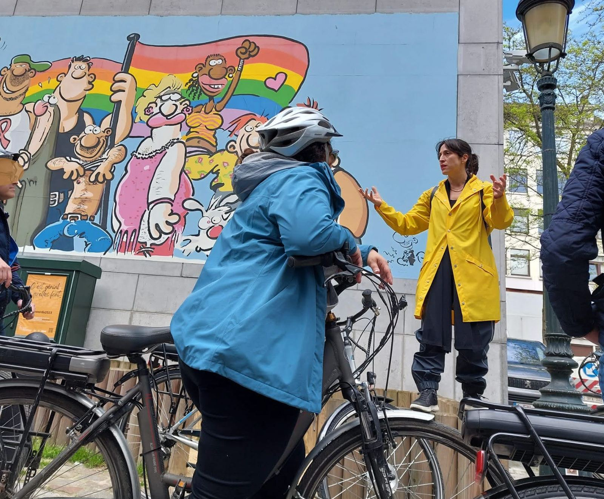
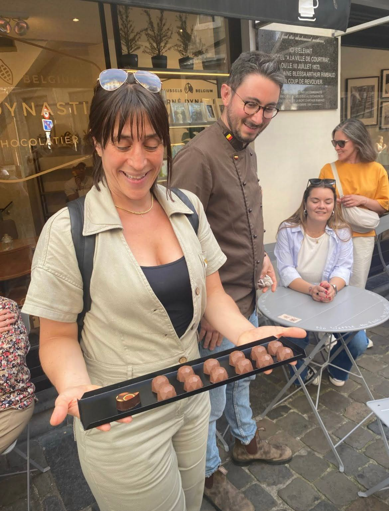
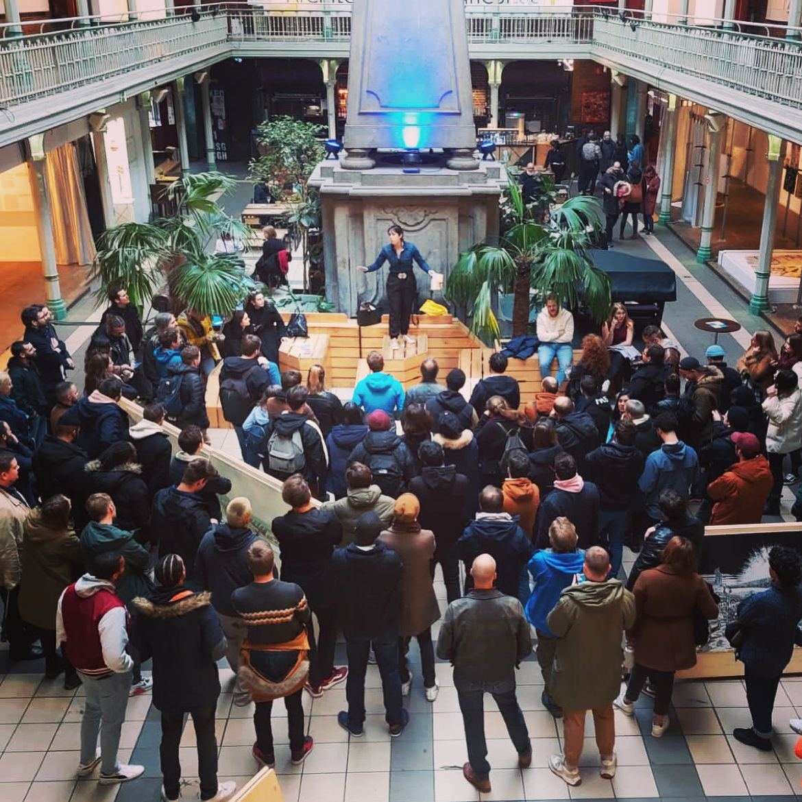

À propos
Votre partenaire local, à Bruxelles et en Belgique.
Beer My Guest est une agence réceptive locale, active depuis 2015. Notre métier ? Vous faire découvrir la Belgique comme nous l’aimons : de l’intérieur.

Notre force
100 % locaux, et fiers de l’être.
Nous connaissons les bonnes adresses, les endroits cachés, les partenaires avec lesquels nous aimons travailler et les expériences qui valent réellement le détour.
Visites guidées, expériences gourmandes, team-buildings, incentives, événements, lieux insolites, vélo, chocolat, bière, culture, patrimoine… Nous imaginons des expériences pour petits et grands groupes, à Bruxelles mais aussi à Anvers, Gand, Bruges et ailleurs en Belgique. Notre objectif : vous éviter les attrape-touristes et vous faire vivre une Belgique authentique, conviviale et pleine de surprises.
Portrait actuel du site — une photo haute définition est à fournir.
Fondatrice & ambassadrice de Bruxelles
Magali De Vinck
Bruxelloise et fière de l’être, Magali vient du monde corporate. Après trois masters et plusieurs années de carrière, elle change de voie pour suivre sa passion : Bruxelles, la Belgique, leur histoire et leur art de vivre.
Elle devient guide-conférencière et fonde Beer My Guest en 2015. Au fil des années, la bière belge devient l’une de ses grandes spécialités : brasseuse et biérologue diplômée, elle accompagne aussi bien les simples curieux que les passionnés en quête d’une expérience plus pointue.
Faire découvrir sa ville comme elle aimerait elle-même la découvrir.


L’équipe
Une équipe locale, passionnée… et soigneusement choisie.
Nos guides et animateurs sont sélectionnés autant pour leurs connaissances que pour leur personnalité et leur capacité à transmettre.
Parce qu’on peut connaître Bruxelles par cœur et être ennuyeux. Chez nous, ce n’est pas vraiment le concept. Nous travaillons en français, en néerlandais et en anglais, et pouvons organiser des expériences dans de nombreuses autres langues selon vos besoins.
Pourquoi Beer My Guest
La bière fait partie de notre histoire… mais pas toute l’histoire.
La bière est une formidable porte d’entrée vers la culture belge. Derrière notre nom se cache surtout une invitation : venez découvrir la Belgique avec nous, sous toutes ses facettes.
Local avant tout
Des guides, artisans, établissements et partenaires que nous connaissons. Authentique plutôt que touristique.
Professionnel, sans être formaté
Une organisation rigoureuse en coulisses ; devant vos participants, de la spontanéité et du plaisir.
Flexible
Deux personnes ou plusieurs centaines, une activité existante ou une demande hors cadre.
Curieux par nature
Toujours à la recherche de nouvelles adresses, de nouveaux lieux et de nouvelles façons de raconter la Belgique.

Bienvenue chez nous